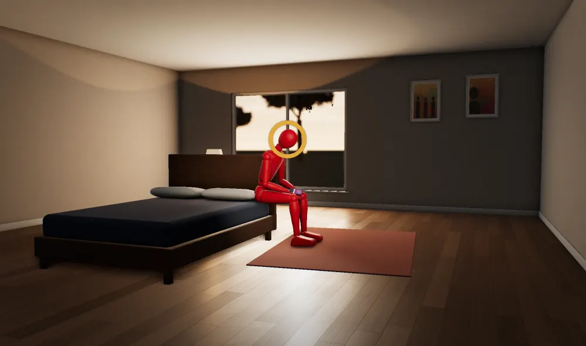
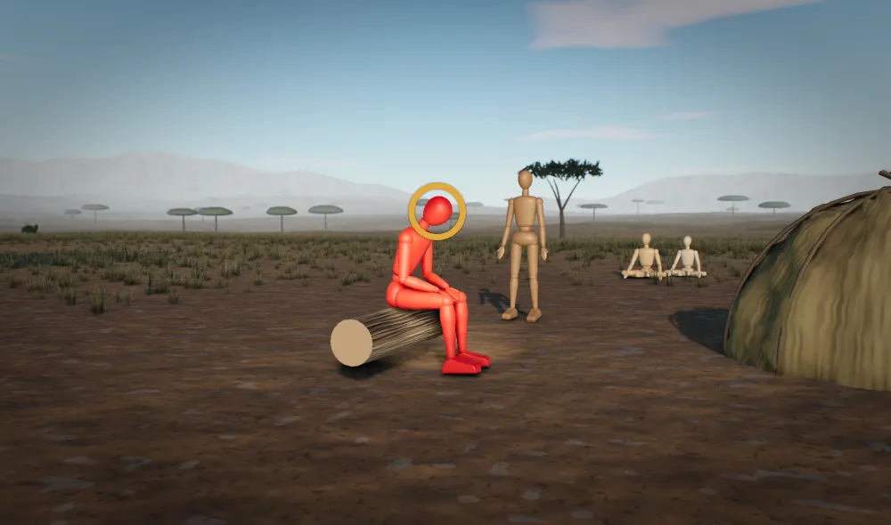

The source


Why
The stage split photo
A promoter paid a lighting crew and a stylist to make one woman look like she wants you, and every repost sells that look again. The human sex drive stops for a fit, willing mate, and for most of our history she was one of a few dozen people standing right there.
Source: A photo of a performer on stage, shared with no caption, name or link
The mechanisms at work
Three components - desire, attraction, and pair bonding - that can work independently of each other. This system shapes much more of human behavior than reproduction itself.
Fully met by
Sexual fulfillment within pair bond + pair bond stability + reproductive success.
The researchFisher's three-system model. Independent from M2 pursuit. HPG axis, not just brain circuits.
Forms bonds with other humans. Pain-grade distress when they're gone.
Fully met by
Reliable human co-regulation through physical presence, operating through nested social layers: ~5 intimate co-regulators (primary emotional/physical support), ~15 sympathy group, ~50 close social partners, ~150 coherent face-to-face relationships (Dunbar number - outer cognitive ceiling). Each layer represents qualitatively different relationship types with different obligations and investment requirements. The innermost ~5 provide the majority of social regulation; the critical variable at this layer is reliability, not count. The ~150 outer figure is an illustrative central tendency, not a hard limit: its derivation from the primate neocortex-ratio regression is contested (Lindenfors, Wartel & Lind 2021). What the evidence carries is the nested layering and the reliability-over-count point, not the exact rung figures; the layered structure and its low-hundreds clustering are separately observed in phone, Christmas-card, and Facebook data.
The researchAttachment and co-regulation system. Includes grief mode. Two states: security (enables broadly) and grief (suppresses broadly).
Hunger, satiety, and constrained total energy expenditure.
Fully met by
Effortful, diverse, seasonal whole foods. Metabolic variety.
The researchPontzer's constrained energy model. Energy is redistributed, not burned.
The claims
How strongtested many timestested onceseen in animalsargued, not yet testedcontested
- 1
A stage show built one woman's look for a crowd and a camera, and every repost sells it again.
- 2
A held split shot close up at a night show is a sexual cue pushed far past daily life.
Cor saysIn animals, cues blown up past nature pull harder than the real thing.
- seen in animalsE424Tinbergen 1951
- 3
Men read a coy look aimed at a whole arena as interest aimed at them.
- 4
A swipe never ends with a woman at the end of it, so the thumb goes for the next photo.
Which system wins
Every brain system that could explain this, oldest at the top. The longer the bar, the more of the source it explains. The longest bar is the top score.
- 500 Myr0.66
M14 Reproductive MotivationWins
A product made to sell: the seller and the blown-up cues
Reproduction · 11 of 24 details · distance 3 of 3
- 500 Myr0.62
- 500 Myr0.61
The money check: who profits from people reacting this way
Reproduction · 7 of 24 details · distance 3 of 3
- 500 Myr0.56
Mating payoff by the cheapest route
Reproduction · 3 of 24 details · distance 3 of 3
- 500 Myr0.53
- 200 Myr0.56
What is at stakeDetails explainedDistance from the camp
Why it wins. A product made to sell: the seller and the blown-up cues explains 11 of the 24 details in the source and sits on reproduction. It also has the top score.
Score = 0.571 x what is at stake (survival 1, reproduction 0.67, standing 0.33) + 0.286 x share of details explained + 0.143 x distance from the camp. Phylogenetic age adds no points; it orders the stack and settles near-ties.
The 24 details
- D1 The source is an image only, with no caption, headline, username, likes or link.
- D2 The image is framed as a card with rounded corners on a white page, and a second photo peeks in at the left edge (blonde hair, same red outfit), so it is a screenshot of a gallery or carousel in a feed.
- D3 A young woman with platinum blonde hair and bangs is performing on a stage.
- D4 She wears a red sequined cropped halter top and a high-cut red sequined bottom, with a red sequined leg warmer or boot on the raised leg; most of her legs, arms and midriff are bare.
- D5 She lies on her side on the pink-red stage floor, propped on one elbow.
- D6 One leg is kicked straight up in a vertical split, pointed at the camera and the crowd.
- D7 She sings into a silver handheld microphone held against her mouth.
- D8 Her eyes cut sideways and down toward the audience over the microphone, a coy look.
- D9 The background is black with small stage lights, suggesting an arena or stadium show at night.
- D10 The shot is close up with a long lens from audience level or below, so it was likely taken by a fan or press photographer and then posted and reposted.
- D11 The pose is held for a camera and a crowd in a live show, so the image is a produced performance photo and not a candid one.
- D12 The image is a card with rounded corners on a white page, and a second photo peeks in at the left edge, so it is a screenshot of a gallery or carousel in a feed.
- D13 A young woman with platinum blonde hair and bangs performs on a stage.
- D14 She lies on her side on a pink-red stage floor, propped on one elbow.
- D15 One leg is kicked straight up in a vertical split aimed at the camera and the crowd.
- D16 The background is black with small stage lights, an arena or stadium show at night.
- D17 The shot is close up on a long lens from audience level or below, so it was taken by a fan or press photographer.
- D18 The photo was posted and reposted, so it reached the viewer through a phone feed.
- D19 A stage show with a sexualised costume and pose is treated as a normal part of the performance.
- D20 The image is a card in a feed carousel, with a second photo of the same outfit peeking in at the left edge.
- D21 A young platinum-blonde woman with bangs performs on a stage.
- D22 She wears a red sequined cropped halter top, a high-cut red sequined bottom, and a red leg warmer or boot on the raised leg.
- D23 One leg is kicked straight up in a vertical split, with the crotch pointed at the camera and the crowd.
- D24 The shot is close up with a long lens from audience level or below, taken by a fan or press photographer, then posted and reposted.
What they say it is
They say
A fan's shot of a performer being sexy on stage, passed on because she looks hot, and the pull is just personal taste.
the feed that reposts it
What it really is
A business built a sexual cue past anything a real woman shows, and an old mating drive stops for it with no woman at the end.
What they get wrong.
It reads a produced stage pose as a woman's own signal and leaves out the team that built it and the people paid by every look.
The rest
A swipe costs nothing and hands over a mate cue no real woman will ever return. Courting a real partner costs time, effort and the risk of hearing no, so the sex drive takes the free look every time. It was built for a camp of a few dozen people a man actually knew, where kin arranged most marriages and character and hard work counted. This woman is shown to a night arena and then to a feed, lit on a stage and shot close up from audience level.
The look goes nowhere. In a camp, people who knew you watched what you did and talked about it. Here nobody who knows the viewer sees him stop, the performer never learns he exists, and a second photo of the same outfit already waits at the edge of the screen. The sex drive is one of the oldest motives humans have, and it cannot learn that a photo is not a woman within reach.
The money goes to the people who built the show. Whoever sells the show and the feed that carries the repost both get paid for his attention.
So now what?
- Unfollow the fan and repost accounts that fill your feed with performers' stage photos, and follow people you actually know, so what arrives on your phone is the people in your life.
- Spend evenings where you meet people in the flesh, a club, a class, a team, where looking at someone can turn into talking to them.
- Look at this kind of feed with friends or your partner around, so somebody says out loud that it's a lit stage show and names who is selling it.
On the line
How do we know?
Claim by claim
Sex drive switches on from what a person sees, and attraction pulls mating effort toward the most attractive partner in view.
Animals respond more strongly to cues blown up past nature than to the real thing.
- seen in animalsE424Tinbergen 1951
Men are built to overread women's sexual interest, because missing a chance to mate cost more than a wasted glance.
For most of human history people lived day to day among a few dozen familiar faces.
- tested many timesEEA-SOC-03Band / camp size (a few dozen adults; ~25-50)E754Marlowe 2005E404Dunbar 2010
- contestedEEA-SOC-01Social network layers (~5/15/50/150)
In most forager societies kin arranged marriages, and character and hard work counted in a spouse.
The sexual and attachment systems settle with a real partner, a bond that holds and children raised.
Everyday conduct was watched by people who knew you, and that record bore on allies and marriage prospects.
- tested many timesE373Boehm 1999
- argued, not yet testedEEA-SOC-09Behavioral observability / reputation visibilityE375Boehm 1999
Socially important information came face to face from known people whose track record you could weigh.
- tested many timesEEA-INFO-02Gossip and narrative flow as reputation and norm transmission
- tested onceE720Wiessner 2014
- argued, not yet testedEEA-INFO-01Signal provenance and accountability (information from known, reputation-bearing, face-to-face sources)
Lasting standing in forager bands came from prestige others chose to give.
- tested many timesE689Garfield et al. 2019E688Boehm 1993
- contestedEEA-SOC-10Leadership and dominance (no rulers; prestige by consent; exit available)
The image is a captionless feed card of a stage performer in a held split, shot close up from audience level at a night show.
- the source
For most of human history standing came from skill and sharing among a few dozen people who knew you.
- tested many timesE689Garfield et al. 2019EEA-SOC-03Band / camp size (a few dozen adults; ~25-50)E754Marlowe 2005
- contestedEEA-SOC-10Leadership and dominance (no rulers; prestige by consent; exit available)
What cuts against it
The supernormal-stimulus findings are animal data, and applying them to human images is a modern extension. In modern samples, the looks people say they want barely predict whom they actually like after meeting.
Most marriages in the forager record were arranged by kin, so attention to the most attractive woman in view may not map onto how mates were found.
Ancestral body display to an audience has no forager record in Cor; the sexual-selection thesis behind display as a mating signal is argued, summary-level and limited to courtship traits.
The image has no caption, so nothing states the viewer's reaction; moral condemnation runs on a separate and contested system.
Not in Cor yet
After seeing highly attractive images, people rate real partners and average women as less attractive.
Kenrick, Gutierres and Goldberg 1989, contrast effect
Audiences form one-sided intimate bonds with performers they see and hear often.
Horton and Wohl 1956, parasocial interaction
Stage performers' costumes, lighting and poses are designed by paid teams of stylists and crews.
Production studies of arena pop tours (no Cor record yet)
Women who see a team-built top performer measure themselves against her as a rival they cannot match.
Kenrick, Gutierres and Goldberg 1989 and follow-ups on contrast effects in self-rated mate value
Time and wanting spent on a performer who never responds are taken from the real people around the viewer.
Horton and Wohl 1956 and later parasocial relationship research
Promoters, labels and platforms earn money each time a viewer stops on a reposted performance photo.
Platform and music industry revenue studies on attention-based ad income and image licensing (no Cor record yet)
Grades are Cor's. Every id opens its Cor page.
Sources
- A photo of a performer on stage, shared with no caption, name or link. The source decoded here.
- Agmo & Laan (2022). Sexual incentive motivation, sexual behavior, and general arousal: Do rats and humans tell the same story?.
- Apostolou (2007). Sexual selection under parental choice: the role of parents in the evolution of human mating.
- Boehm (1993). Egalitarian behavior and reverse dominance hierarchy.
- Boehm (1999). Hierarchy in the Forest: The Evolution of Egalitarian Behavior.
- Dunbar (2010). How Many Friends Does One Person Need? Dunbar's Number and Other Evolutionary Quirks.
- Eastwick et al. (2014). The predictive validity of ideal partner preferences: A review and meta-analysis.
- Fisher (2016). Anatomy of Love: A Natural History of Mating, Marriage, and Why We Stray.
- Garfield et al. (2019). The evolutionary anthropology of political leadership.
- Haselton & Buss (2000). Error Management Theory: A New Perspective on Biases in Cross-Sex Mind Reading.
- Landy & Goodwin (2015). Does Incidental Disgust Amplify Moral Judgment? A Meta-Analytic Review of Experimental Evidence.
- Marlowe (2004). Mate preferences among Hadza hunter-gatherers.
- Marlowe (2005). Hunter-gatherers and human evolution.
- Miller (2000). The Mating Mind: How Sexual Choice Shaped the Evolution of Human Nature.
- Tinbergen (1951). The Study of Instinct.
- Tybur et al. (2013). Disgust: Evolved Function and Structure.
- Walker et al. (2011). Evolutionary history of hunter-gatherer marriage practices.
- Wiessner (2014). Embers of society: Firelight talk among the Ju/'hoansi Bushmen.